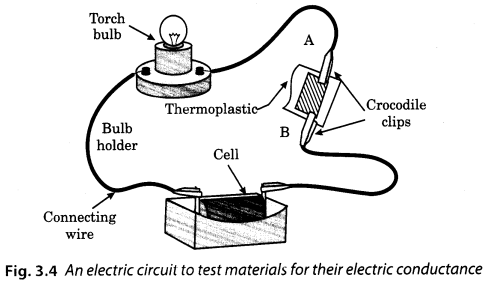
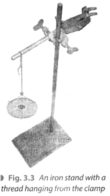

NCERT Solutions for Class 8 Science Chapter 3 Synthetic Fibers and Plastics
Topics and Sub Topics in Class 8 Science Chapter 3 Synthetic Fibers and Plastics:
| Section Name | Topic Name |
| 3 | Synthetic Fibers and Plastics |
| 3.1 | What are Synthetic Fibers? |
| 3.2 | Types of Synthetic Fibers Rayon |
| 3.3 | Characteristics of Synthetic Fibers |
| 3.4 | Plastics |
| 3.5 | Plastics as Materials of Choice |
| 3.6 | Plastics and the Environment |
Synthetic Fibres and Plastics Class 8 Science NCERT Textbook Questions
Question 1.
Explain why some fibres are called synthetic.
Answer:
Some fibres are called synthetic fibres because they are made by man using chemicals.
Question 2.
Mark (✓) the correct answer.
Rayon is different from synthetic fibres because
(a) it has a silk-like appearance.
(b) it is obtained from wood pulp.
(c) its fibres can also be woven like those of natural fibres.
Answer:
(b) it is obtained from wood pulp.
Question 3.
Fill in the blanks with appropriate words.
(a) Synthetic fibres are also called ____ or ____ fibres.
(b) Synthetic fibres are synthesised from a raw material called _____
(c) Like synthetic fibres, plastic is also a _____
Answer:
(a) man-made, artificial fibres
(b) petrochemicals
(c) polymer
Question 4.
Give examples which indicate that nylon fibres are very strong.
Answer:
The following examples indicate that nylon fibres are very strong.
(i) They are used for making parachutes and ropes for rock climbing.
(ii) They are used in making seat-belts, fishing nets, tyre cord, a string for sports rackets and musical instruments.
Question 5.
Explain why plastic containers are favoured for storing food.
Answer:
Plastic containers are favoured for storing food because of the following reasons:
(i) the plastics do not react with the food stored in them.
(ii) the plastics are lightweight and are strong.
(iii) they are easy to handle and safe.
Question 6.
Explain the difference between thermoplastic and thermosetting plastics.
Answer:
| Thermoplastics | Thermosetting plastics |
| (i) These plastics softened on heating and can be bent easily. | (i) These plastics when moulded once, can’t be softened again. |
| (ii) They do not lose their plasticity. | (ii) They lose their plasticity. |
| (iii) Examples are polyethene, PVC, etc. | (iii) Examples are bakelite and melamine. |
Question 7.
Explain why the following are made of thermosetting plastics.
(a) Saucepan handles
(b) Electric plugs/switches/plugboards
Answer:
(a) Since, thermosetting plastics are a bad conductor of heat and do not get heated up while cooking, they are used for making saucepan handles.
(b) Since thermosetting plastics are a bad conductor of electricity and the electric current does not pass through such plastics, they are used for making electric plugs/switches/plugboards.
Question 8.
Categorise the materials of the following products into ‘can be recycled’ and ‘can not be recycled’.
Telephone instruments, plastic toys, cooker handles, carry bags, ballpoint pens, plastic bowls, plastic covering on electrical wires, plastic chairs, electrical switches.
Answer:
| Can be recycled | Cannot be recycled |
| Plastic toys carry bags, plastic bowls, plastic covering on electrical wires, plastic chairs. | Telephone instruments, cooker handles, ballpoint pens, electrical switches. |
Question 9.
Rana wants to buy shirts for summer. Should he buy cotton shirts or shirts made from synthetic material? Advise Rana, giving your reason.
Answer:
He should buy cotton shirts. This is because cotton has more capacity to hold moisture than synthetic clothes. In summers we have extensive sweating which is easily soaked by cotton shirts and hence, cotton clothes are much better than the clothes made from synthetic material.
Question 10.
Give examples to show that plastics are non-corrosive in nature.
Answer:
The literal meaning of non-corrosive is resistant to get destroyed by chemical action.
Following are the examples that show that plastics are non-corrosive in nature.
- Plastic containers do not react with items stored in it.
- They do not get rusted when exposed to moisture and air.
- They do not decompose when left in open for a long period.
Question 11.
Should the handle and bristles of a toothbrush be made of the same material? Explain your answer.
Answer:
No, the handle and bristles of a toothbrush should not be made of the same material. This is because our gums are soft and the bristles should be made of soft material so that it does not harm the gums. On the other hand, the handles should be made up of hard material so that it can give a firm grip.
Question 12.
‘Avoid plastics as far as possible’. Comment on this advice.
Answer:
Plastics must be avoided as far as possible. The materials made of plastics are non-biodegradable. The use of plastics has a bad effect on the environment. When the plastics are burnt, it releases a lot of poisonous fumes into the atmosphere causing air pollution. These plastic materials when eat up by the animals (like cows), choke their respiratory system. This can cause death of these animals. The waste plastic articles thrown here and there carelessly get into dirty water drains and sewers, and block them. In a nutshell, plastics can be considered a threat to our environment.
Question 13.
Match, the terms of column A correctly with the phrases given in column B.
| A | B |
| (i) Polyester | Prepared by using wood pulp |
| (ii) Teflon | Used for making parachutes and stockings |
| (iii) Rayon | Used to make non-stick cookware |
| (iv) Nylon | Fabrics do not wrinkle easily |
Answer:
(i) (d)
(ii) (c)
(iii) (a)
(iv) (b)
Question 14.
‘Manufacturing synthetic fibres is actually helping the conservation of forests’. Comment.
Answer:
In the manufacturing of synthetic fibres, we use only chemical substances and no natural materials, thus, in turn, we conserve forests.
Question 15.
Describe an activity to show that thermoplastic is a poor conductor of electricity.
Answer:
Arrange a circuit as shown in the given figure. Leave a gap between two ends of the wire. Place a ther-moplastic in the gap. Observe the bulb.

It is observed that the bulb does not glow. This shows that thermoplastic is a poor conductor of electricity.
Synthetic Fibres and Plastics Class 8 Science NCERT Intext Activities Solved
Activity 1 (NCERT Textbook, Page 34)
Take an iron stand with a clamp. Take a cotton thread of about 60 cm length. Tie it to the clamp so that it hangs freely from it as shown in Fig. 3.3.

At the free end suspend a pan so that weight can be placed in it. Add weight one by one till the thread breaks. Note down the total weight required to break the thread. This weight indicates the strength of the fibre. Repeat the same activity with threads of wool, polyester, silk and nylon. Tabulate the data as shown in Table 3.1. Arrange the threads in order of their increasing strength.
Observation Table 3.1
| S. No. | Type of Thread/ Fibre | Total Weight required to break the thread |
| 1. | Cotton | 12 gm |
| 2. | Wool | 70 gm |
| 3. | Silk | 50 gm |
| 4. | Nylon | 100 gm |
(Precaution: Note that all threads should be of the same length and most of the same thickness.)
Activity 2 (NCERT Textbook, Page 36)
Take two cloth pieces of the same size, roughly half a metre square each. One of these should be from natural fibre. The other could be a synthetic fibre. You can take the help of your parents in selecting these pieces. Soak the pieces in different mugs each containing the same amount of water. Take the pieces out of the containers after five minutes and spread them in the sun for a few minutes. Compare the volume of the water remaining in each container.
Solution:
It is observed that the volume of water of the container in which natural fibre is soaked contains less water as compared to the container in which synthetic fibre is soaked. Thus, natural fibre absorbs more water as compared to synthetic fibre. When both the fibres were spread in the sun, it was observed that synthetic fibre took less time to dry than natural fibre.
NCERT Solutions for Class 8 Science Chapter 3 – 1 Mark Questions and Answers
Question 1.
Explain why some fibres are called synthetic. [NCERT]
Answer:
Some fibres are called synthetic because they are made by human beings.
Question 2.
Mark the correct answer.
Rayon is different from synthetic fibres because [NCERT]
- It has a silk-like appearance.
- It is obtained from wood pulp.
- Its fibres can also be woven like those of natural fibres.
Answer:
- It is obtained from wood pulp.
Question 3.
Give examples which indicate that nylon fibres are very strong.
Answer:
Parachutes and nylon ropes are used for rock climbing.
Question 4.
Name the plastic whose sheets are used for packing liquids.
Answer:
Polythene.
Question 5.
Why is teflon used as tape for sealing purpose ?
Answer:
Becausee of its toughness, teflon is used as tape for sealing purpose.
Question 6.
Name the first fully synthetic fibre.
Answer:
Nylon.
Question 7.
Why nylon is used for making parachutes ?
Answer:
Nylon is used for making parachutes, because it is very strong, elastic and light.
Question 8.
Name the material used for making ropes for rock climbing.
Answer:
Nylon.
Question 9.
What is polyester ?
Answer:
Polyester is made up of the repeating units of an ester.
Question 10.
Name the plastic used for making polythene bags.
Answer:
Polythene bag is made of plastic which is a polymer of ethene.
Question 11.
What name is given to plastics which can be re-set a number of times ?
Answer:
Thermoplastics.
Question 12.
Classify the following into thermosetting and thermoplastics-combs, bakelite, melamine, toys.
Answer:
Thermosetting – bakelite, melamine
Thermoplastics – combs, toys
Question 13.
Why are the chemicals in the laboratory stored in plastic containers ?
Answer:
Plastics are non-reactive, so they can be used for storing chemicals.
Question 14.
Can you store pickles in plastic containers ? Why ?
Answer:
Plastics are non-reactive, so pickles can be stored in them.
Question 15.
Why are the electric wires covered with plastic ?
Answer:
Plastic is a poor conductor of electricity, therefore, the wires are covered with it.
Question 16.
Why do we use plastic cookwares in microwave ovens ?
Answer:
We use plastic cookware in microwave ovens, because they are not affected by heat but the food is cooked.
Question 17.
Tin takes about 100 years to degenerate. Is it biodegradable or non-biodegradable ?
Answer:
Tin is non-biodegradable.
Question 18.
Is it advisable to use recycled plastic containers for storing food ?
Answer:
No, we should not use recycled plastic containers for storing food because they contain colouring agents.
Question 19.
As a responsible citizen, what are the 4R’s we should remember ?
Answer:
Reduce, Reuse, Recycle and Recover.
NCERT Solutions for Class 8 Science Chapter 3 – 2 Mark Questions and Answers
Question 1.
Aperson has to make a non-stick pan. He has three types of plastic-Bakelite, Teflon and PVC. Which plastic will he use for coating and why ?
Answer:
The person will use Teflon because it is not affected by heat and does not react chemically with other substances.
Question 2.
Explain the difference between thermoplastic and thermosetting plastics. [NCERT]
Answer:
| Thermosetting | Thermoplastic |
| (i) These plastics can be moulded and (ii) e.g.,Bakelite and melamine. |
(i) These plastics can be moulded and reset a number of times. (ii) e.g. Polythene and PVC. |
Question 3.
Differentiate between natural and synthetic fibres.
Answer:
Natural fibres are obtained from nature, e.g., cotton whereas synthetic fibres are made by man, e.g., nylon.
Question 4.
How is rayon made ? Give one advantage of using rayon.
Answer:
Rayon is obtained from wood pulp by treating it chemically. It is cheaper than silk, but can be woven like silk fibre.
Question 5.
Is nylon fibre so strong, that we can use it to make parachutes ?
Answer:
Yes, nylon is very strong and it can be used for making parachutes.
Question 6.
Give some uses of PET.
Answer:
PET is used for making bottles, utensils, fibres and wires.
Question 7.
Give the composition of Polycot and Polywool.
Answer:
Polycot is a mixture of polyester and cotton, Poly wool is a mixture of polyester and wool.
Question 8.
What properties of plastics make it useful for many things ?
Answer:
Plastics can be recycled, reused, coloured, melted, rolled into sheets or made into wires, so they are very useful.
Question 9.
Why is melamine used for making kitchenware ?
Answer:
Melamine resists fire and can tolerate heat better than other plastics. So, it is used for making kitchenware.
Question 10.
Buckets made up of plastics are better. Why ?
Answer:
Buckets made up of plastic are better because they are light, strong and durable.
Question 11.
Differentiate between biodegradable and non-biodegradable materials.
Answer:
| Biodegradable Materials | Non-biodegradable Materials |
| (i) A meterial which gets decomposed through natural processes, such as action of bacteria. (ii) e.g., cotton or jute. |
(i) A material which does not get decomposed by natural processes. (ii) e.g., plastics. |
Question 12.
Should the handle and bristles of a tooth brush be made of the same material ? Explain your answer. [NCERT]
Answer:
No, the handle and bristles of tooth brush cannot be made of the same plastic. The handle is hard but the bristles are soft and flexible.
NCERT Solutions for Class 8 Science Chapter 3 – 3 Mark Questions and Answers
Question 1.
Give three advantages of polythene over natural materials. [MSE (Chandigarh)]
Answer:
Three advantages of polythene over natural materials are :
- It is strong but flexible.
- Can be rolled into sheets.
- Water resistant.
Question 2.
Give one use each of bakelite, nylon and acrylic.
Answer:
Bakelite is used for making plugs and switches. Nylon is used in textile industry to produce clothes. Acrylic is used as a substitute of natural wool for knitting sweaters, blankets etc.
Question 3.
Fill in the blanks with appropriate words. [NCERT]
- Synthetic fibres are also called ……….. or ……….
- Synthetic fibres are synthesised from raw material called …………
- Like synthetic fibres, plastic is also a …………..
Answer:
- artificial, man-made
- mono or petrochemicals
- polymers.
Question 4.
Explain why plastic containers are favoured for storing food. [NCERT]
Answer:
Food can be stored in plastic containers because
- Plastics are non-reactive.
- Plastics are light and strong.
- Plastics are durable.
Question 5.
Explain why the following are made of thermosetting plastics : [NCERT]
- Saucepan handles
- Electric plugs/switches/plug boards.
Answer:
- Saucepan handles are made of thermosetting plastics because they are bad conductors of heat.
- Electric plugs/switches/plug boards are made of thermosetting plastics because they are bad conductors of electricity.
Question 6.
Rana wants to buy shirts for summer. Should he buy cotton shirts or shirts made from synthetic material ? Advice Rana, giving your reason.
Answer:
Rana should buy cotton shirts. Cotton clothes are preferred in summer because they absorb sweat and the person feels cool whereas synthetic materials do not absorb sweat and the person feels uncomfortable.
Question 7.
Give examples to show that plastics are noncorrosive in nature. [NCERT]
Answer:
- Buckets made of iron get rusted but those made of plastic are not rusted.
- Food can be stored in plastic containers, as they are resistant to chemicals in the food
- Teflon coated pans are used instead of metallic as it doesnot react with chemicals in the food.
Question 8.
Give three advantages of rayon.
Answer:
Advantages of rayon are :
- It is cheap.
- It can be dyed in many colours.
- It can be woven like silk.
Question 9.
What are the advantages of nylon ?
Answer:
Nylon fibre is strong, elastic and light. It is lustrous and easy to wash.
Question 10.
Give some uses of nylon.
Answer:
Nylon can be used for making socks, ropes, tents, toothbrushes, sleeping bags, curtains, parachutes and ropes for rock climbing.
Question 11.
What are the advantages of using fabrics made of polyester ?
Answer:
Fabrics made of polyester
- do not get wrinkled easily
- are easy to wash,
- easy to maintain.
Question 12.
Why people prefer to wear acrylic sweaters than pure wool sweaters ?
Answer:
Acrylic sweaters are cheaper and easy to maintain. They are available in many colours.
Question 13.
What are the disadvantages of wearing synthetic fabrics ?
Answer:
Synthetic fabric catches fire very easily. It melts and sticks to the body of the person wearing it. During summers, synthetic fibres do not absorb sweat and a person wearing it feels uncomfortable.
Question 14.
Give the characteristics of synthetic fibres.
Answer:
Synthetic fibres dry up soon, are durable, less expensive, readily available and easy to maintain.
NCERT Solutions for Class 8 Science Chapter 3 – 5 Mark Questions and Answers
Question 1.
Categorise the materials of the following products into ‘can be recycled’ and ‘cannot be recycled’. [NCERT]
Telephone instruments, plastic toys, cooker handles, carry bags, ball point pens, plastic bowls, plastic covering on electrical wires, plastic chairs, electrical switches.
Answer:
| Can be recycled | Non-biodegradable Materials |
| Toys, carry bags, plastic bowls, plastic covering on electrical wires, plastic chairs. | Telephone instruments, cooker handles, electric switches, ball point pens, electrical switches. |
Question 2.
Match the terms of Column A correctly with the phrases given in Column B. [NCERT]
| Column A | Column B |
| (a) Polyester (b) Teflon (c) Rayon (d) Nylon |
(i) Prepared by using wood pulp. (ii)Used for making parachutes and stockings. (iii) Used to make non-stick cookwares. (v) Fabrics do not wrinkle easily. |
Answer:
| Column A | Column B |
| (a) Polyester | (iv) Fabrics do not wrinkle easily. |
| (b) Teflon | (iii) Used to make non-stick cookwares. |
| (c) Rayon | (i) Prepared by using wood pulp. |
| (d) Nylon | (ii) Used for making parachutes and stockings. |
Question 3.
‘Manufacturing synthetic fibres is actually helping conservation of forests’. Comment. [NCERT]
Answer:
The said statement is correct to a certain extent. The forests would be conserved if synthetic fibres are used, but other effects of synthetic fibres are more harmful. Disposal of synthetic fibres causes lot of environmental pollution. When synthetic fibres bum, lot of smoke is produced.
Question 4.
‘Avoid plastics as far as possible’. Comment on this advice. [NCERT]
Answer:
Plastics are very useful, but it causes serious environmental and health concern :
- Plastics are non-biodegradable.
- Careless disposal of plastic bags, chokes, drains and blocks the soil.
- If eaten by cows, it can kill them.
- Plastic bags can also contaminate foodstuffs due to poisonous dyes getting absorbed into food
Question 5.
How is plastic useful in healthcare industry ?
Answer:
In healthcare, plastics are used
- for packaging of tablets
- as threads for stitching wounds
- in syringes
- doctor gloves
- for making a number of medical instruments.
Question 6.
“Even though plastics are very useful, they are not environment friendly.” Justify the statement.
Answer:
Plastics are very useful, but their disposal is a big problem. Plastics are non-biodegradable and take many years to decompose. They release a lot of poisonous fumes, when burnt so they cause environmental pollution.
Question 7.
Give methods by which pollution due to plastics can be solved.
Answer:
Pollution due to plastics can be solved by following methods :
- Avoid the use of plastics as far as possible.
- Use bags, made of jute or cloth.
- Biodegradable and non-biodegradable wastes should be separated and disposed off separately.
- Plastics should be recycled and reused.
NCERT Solutions for Class 8 Science Chapter 3 MCQs
Question 1.
Electrical switches are made of
(a) nylon
(b) bakelite
(c) polythene
(d) melamine
Answer:
(b)
Question 2.
Out of the following, which is not biodegradable ?
(a) Vegetable peels
(b) Plastic bags
(c) Cotton
(d) Jute
Answer:
(b)
Question 3.
Clothes made of which fabric are best suited for hot climate ?
(a) Cotton
(b) Nylon
(c) Acrylic
(d) Polycot
Answer:
(a)
Question 4.
Out of the following, which is not a natural fibre ?
(a) Cotton
(b) Silk
(c) Jute
(d) Rayon
Answer:
(d)
Question 5.
Naturally occurring po/ymer is
(a) cellulose
(b) polyester
(c) nylon
(d) PVC
Answer:
(a)
Question 6.
Plastic used for coating non-stick pans is
(a) PVC
(b) ester
(c) bakelite
(d) melamine
Answer:
(d)
Question 7.
Pickles are kept in plastic containers because plastic containers are
(a) non-corrosive
(b) light
(c) colourful
(d) cheap
Answer:
(a)
Question 8.
Which of the following is a thermoplastic
(a) Bakelite
(b) Melamine
(c) Polythene
(d) Jute
Answer:
(c)
Question 9.
Which of the following can be recycled?
(a) Plastic bowls
(b) Ballpoint pens
(c) Telephone instruments
(d) Electrical switches
Answer:
(a)
Question 10.
Which material is best suited for covering electric wires?
(a) Plastic bowls
(b) PVC
(c) Polystyrene
(d) Nylon
Answer:
(b)
More CBSE Class 8 Study Material
- NCERT Solutions for Class 8 Maths
- NCERT Solutions for Class 8 Science
- NCERT Solutions for Class 8 Social Science
- NCERT Solutions for Class 8 English
- NCERT Solutions for Class 8 English Honeydew
- NCERT Solutions for Class 8 English It So Happened
- NCERT Solutions for Class 8 Hindi
- NCERT Solutions for Class 8 Sanskrit
- NCERT Solutions